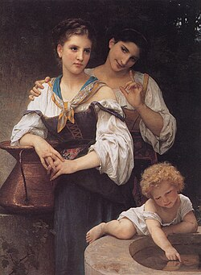

Exhibitions
The Secret History of Kiss, Shooting Gallery, San Francisco, California, US, November 1–December 6, 2008.
Literature
Ron English, Original Grin: The Art of Ron English (Paris: Cernunnos, 2019), p. 41. ISBN 978-2374950938.
Notes
This work appears in cropped form on Shooting Gallery SF’s gallery page for The Secret History of Kiss.
This work references William-Adolphe Bouguereau’s The Secret.
This painting also references members of the band KISS in their signature makeup.
The work is also documented in online coverage of The Secret History of Kiss.
Ancillary Documentation




Additional Online Circulation
Ron English “The Secret of KISS” Exhibition
· Hypebeast
Eye Candy SmörgÃ¥sbord: The Secret History of Kiss
· Knotoryus
Openings: Ron English @ Shooting Gallery
· Arrested Motion
Naver post
· m.blog.naver.com
ÕÑÂûø ñы Ñ€þú-ûõóõýôы öøûø ò ÑÂÿþÑ…у à õüñрðýôтð
· Kulturologia
Ron English - The Secret History of Kiss
· Art Juicer / LiveJournal
Ron English
· Trendland
Ron English and that Renaissance landmark work that you do not expect
· Miami Niche
Azúcar alto: el arte grotesco de Ron English
· 20 Minutos
Ron English archive tag
· Erin Williamson Design